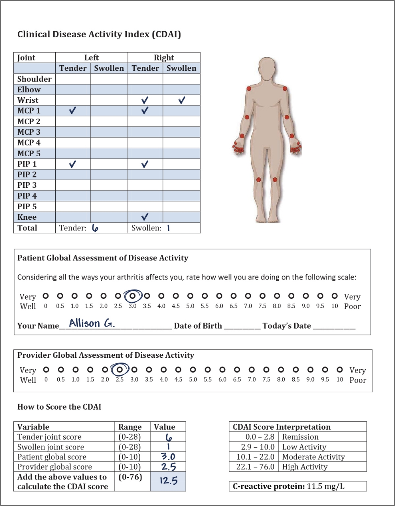

53-year-old female with RA and risk factors for MACE
Allison is a 53-year-old white female who works as a computer systems analyst. She is 160 centimetres tall and weighs 80 kilograms. Her BMI is 31.2 kg/m2 (obese). Allison does not participate in regular physical activity but enjoys walking around her neighbourhood. She recently noticed that she feels shortness of breath after climbing a flight of stairs in her house. She has been trying to lose weight by changing her diet and eating healthier for the past six months. She has hypertension. Her most recent BP was 140/95 mmHg. She has type 2 diabetes mellitus, with an elevated fasting glucose of 7.3 mmol/L. Her HbA1c is 8.6 and her LDL-C level is 5.4 mmol/L. Allison has been smoking for 25 years and is trying to quit using nicotine patches. Her mother was diagnosed with premature cardiovascular coronary artery disease at the age of 53 years. Allison is currently treated with statins, ACE inhibitors, and oral hypoglycemics. She has had rheumatoid arthritis for 10 years, and is taking methotrexate.

53-year-old female with RA and risk factors for MACE
“Due to my personal and family history, my doctor is concerned that I may be at high risk for heart attacks and strokes (MACE). I recently had a follow-up with my rheumatologist. She counted my tender and swollen joints and asked me to rate how my arthritis affects me on a scale of 0 to 10, and we completed a few other forms and tests.”
Her assessment was as follows:
Allison’s CDAI is 12.5, which indicates moderate inflammatory activity. Her CRP level is moderately elevated and this places her at increased risk of a cardiovascular event.
Allison is hypertensive (140/95 mmHg), obese (BMI 31.2 kg/m2), has type 2 diabetes, has been smoking for 25 years, has dyslipidemia, and has a family history of premature CVD. Which of these comorbidities are important to consider when you are treating Allison for her RA?
All of the above
Allison is at a high risk of MACE due to her multiple CV risks and her RA. Patients with RA have an increased risk of CV events due to systemic inflammation and a high prevalence of other risk factors.1 CVD risk factors are highly associated with disease activity and disability in patients with RA.2 Due to the increased morbidity and mortality associated with CVD, all patients with RA should be screened for CV risk factors early and frequently.3 Modifiable CV risk factors should be addressed.
Do CV comorbidities attenuate the chance of remission?
Yes
Patients with RA have a higher prevalence of CV comorbidities compared to the age- and sex-matched general population. Having comorbidities in RA decreases the chance of remission. Patients with active disease on average have worse CV biomarkers (such as poorer control of BP, glucose and lipids, and higher CRPs) than those in remission.4 The time spent in each acute flare increases CV events by 7% compared to remission.5 Therefore, the treatment of RA should focus on early control and ongoing low disease activity and remission using a treat-to-target strategy.6 A treat-to-target approach also reduces the progression of atherosclerosis and improves endothelial function.7
Allison’s current LDL-C level is 5.4 mmol/L, and her BP is 140/95 mmHg. What do you think her LDL-C and BP levels should be?
< 2.0 mmol/L or 50% reduction; 130/80 mmHg
BP and lipid targets in patients with RA with MACE risk factors should be treated as in patients with type 2 diabetes. Current guidelines recommend that, in patients with diabetes, BP goals should be < 140/90 mmHg or more aggressively set at < 130/80 mmHg.8 In patients at a high risk of CVD without diabetes, recommendations are to reduce systolic BP to ≤ 120 mmHg.9
LDL-C should be consistently < 2.0 mmol/L, or there should be more than 50% reduction from the baseline.10 If LDL-C is high, lipid-lowering therapy is recommended. Further, the 2021 Canadian Cardiovascular Society guidelines provide additional recommendations for patients with dyslipidemia. Specifically, if triglycerides are < 1.5 mmol/L, treatment should be monitored with LDL-C, non-HDL-C or ApoB (fasting or non-fasting). If triglycerides are ≥ 1.5 mmol/L, treatment should be monitored with non-HDL-C or ApoB (fasting or non-fasting).11
53-year-old female with RA and risk factors for MACE
Due to my general health, I am taking several drugs to manage my blood pressure, diabetes, and cholesterol levels. It is a lot of drugs to take, and sometimes, I forget to take some of them.
A patient with rheumatoid arthritis is taking several medications (i.e., for RA and CV comorbidity). Does polypharmacy (i.e., use of five or more drugs) reduce the chance of remission in this patient?
Yes
Polypharmacy can negatively impact treatment outcomes. Patients are less likely to adhere to their treatment if they take several drugs to manage their CV comorbidities and RA. Moreover, patients taking several drugs are more likely to have adverse effects to medications, the possibility of drug interactions, increased hospitalization, and mortality.12 Some general measures can help mitigate these issues. For example, patients can use blister packs or daily pill organizers for medications, or even reminder apps on their phones.
Does Allison’s CRP level (11.5 mg/L) put her at increased risk of MACE?
Yes
Allison’s CRP level is high and places her at a higher risk of a CV event.
What are Allison’s risk factors for MACE?
Diabetes mellitus, dyslipidemia, smoking, HTN
Allison’s risk factors for MACE include diabetes mellitus, dyslipidemia, smoking, and hypertension. She also has a high BMI.
Click to see Dr. Tardif’s answer.

CV risk can be assessed using the Framingham or Reynold’s risk scores. Click on each box to read more information about the benefits/drawback of each, and considerations for their clinical use.
The Framingham risk score is calculated based on age, sex, HDL-C, total cholesterol, SBP, smoking status, and presence of diabetes. However, this score does not consider the level of inflammation, such as hsCRP. Thus, EULAR recommends applying a 1.5 multiplier to the calculated CV risk score for patients with RA,3 and the joint American Academy of Dermatology (AAD) and National Psoriasis Foundation (NPF) guidelines recommended doing the same for patients with psoriatic arthritis (PsA).13

The Reynold’s risk score is quantified based on the patient’s age, sex, BP, cholesterol levels, smoking status, and family history. This risk score also incorporates the inflammatory marker C-reactive protein (hsCRP).14,15 Therefore, Reynold’s risk score may be more sensitive to inflammatory fluctuations.16
Assessing cardiovascular risk using solely the Framingham or Reynold’s score can underestimate and sometimes overestimate CV risk in patients with RA.17
Which additional, non-invasive tests should be used to screen for CV risk in patients with RA?
Click to see Dr. Tardif’s answer.
Other risk factors for MACE include:20
Age and sex are also risk factors. Males typically develop cardiovascular disease about 10 years earlier than females. However, males are more likely to develop MACE.21
Corticosteroids and NSAIDs may have negative effects on the heart and blood vessels.22
What are some ways to help Allison quit smoking, improve her BMI and control her diabetes?
There are several different ways to help Allison quit smoking, reduce her BMI, and help her control her diabetes. Click the boxes below to learn more.
Many pharmacists can also prescribe smoking-cessation aids. Referral to diabetes education should be considered and should involve seeing a nurse and a dietician who will discuss targets such as BMI, proper diet, HbA1C control, etc.
What are some options to help Allison quit smoking? Are medications for smoking cessation safe for patients with RA?
Smoking cessation is associated with decreased inflammatory activity and a better response to treatment.23 Some options to quit smoking involve nicotine-replacement products,24 which are safe in patients with RA. Many pharmacists can prescribe smoking-cessation aids such as nicotine patches, pills, etc.
How can rheumatologists help patients improve their BMI? What are some resources to help reduce BMI?
Lifestyle advice, such as exercise and healthy eating, should be provided to patients with RA. Physical activity improves RA symptoms by strengthening muscles and tissues surrounding the joints which have been weakened by RA.25 Exercise is also an excellent option to manage diabetes and hyperlipidemia. Some patients may join a gym or hire a personal trainer or nutritionist. A physiotherapist consult may provide patients with information on the range-of-motion, strengthening, and endurance exercises they can safely perform at their home.
Unfortunately, not all of these services are covered by public insurance, and most also require patient motivation. Self-management classes and (evidence-based) online resources may also be helpful. For example, The Arthritis Society has available resources for patients regarding exercise and healthy eating and the benefits of these for arthritis.28
Patients may also consider reducing sugar intake, eating more vegetables and fruit, choosing non-saturated fats, such as olive and canola oil, and switching to foods high in omega-3 fatty acids, such as walnuts and cold-water fish, sunflower seeds and flaxseeds.25 This diet is associated with decreased CV risk26 and decreased inflammatory activity. A Mediterranean diet can also be recommended. Coverage for dietary supplements varies by province.
Some drugs like semaglutide may be used to lose weight but are not indicated for everyone (i.e., can only be used in patients with type II diabetes mellitus).
However, barriers to some of these options exist. Not all patients can afford a gym membership, hire a personal trainer and/or dietitian, or go to a physiotherapist. Due to their symptoms (i.e., active RA and chronic pain), patients may not feel motivated to exercise or change their diet.
What are some options to help patients with RA improve their diabetes control?
There are several ways patients with RA can improve their diabetes control. Referral to an endocrinologist can reduce the risk of CV events. A primary care physician can also monitor, tightly target and control diabetes. Lastly, if the patient is taking steroids, it is advisable to reduce the dose and discontinue as soon as possible due to its potential to raise glucose levels.27
What messages would rheumatologists and cardiologists like to communicate to primary care physicians about the management of patients with RA at risk of MACE?
Click to see Dr. Pope’s answer.

Click to see Dr. Tardif’s answer.
How can rheumatologists best communicate their plans and thoughts to other specialists involved in a patient’s care?
Click to see Dr. Pope’s answer.

Patients with RA at a high risk of MACE should be screened for CV risk factors early and over time.
In patients with CV comorbidities, treatment of RA should focus on:
In terms of treatment targets, a patient with RA with MACE risk factor should be treated:
What are the LDL-C and BP targets in patients with RA and MACE risk factors?
What does Reynold’s risk score account for that the Framingham risk score does not?
According to EULAR, Framingham risk score should be multiplied by a factor of ___ for most patients with RA.
Non-invasive tools that can be used to screen for CV risk in patients with RA include:
Effective ways to improve BMI include:
Smoking cessation may be associated with:
1. Colaco K, Ocampo V, Ayala AP, et al. Predictive Utility of Cardiovascular Risk Prediction Algorithms in Inflammatory Rheumatic Diseases: A Systematic Review. J Rheumatol 2020; 47:928-38.
2. Cui K, Movahedi M, Bombardier C, et al. Cardiovascular risk factors are negatively associated with rheumatoid arthritis disease outcomes. Therapeutic Advances in Musculoskeletal Disease 2021; 13:1-10.
3. Agca R, Heslinga SC, Rollefstad S, et al. EULAR recommendations for cardiovascular disease risk management in patients with rheumatoid arthritis and other forms of inflammatory joint disorders: 2015/2016 update. Ann Rheum Dis 2017; 76(1):17-28.
4. Provan SA, Semb AG, Hisdal J, et al. Remission is the goal for cardiovascular risk management in patients with rheumatoid arthritis: a cross-sectional comparative study. Ann Rheum Dis 2011; 70(5):812-7.
5. Myasoedova E, Chandran A, Ilhan B, et al. The role of rheumatoid arthritis (RA) flare and cumulative burden of RA severity in the risk of cardiovascular disease. Ann Rheum Dis 2016; 75:560-5.
6. Stoffer MA, Schoels MM, Smolen JS, et al. Evidence for treating rheumatoid arthritis to target: results of a systematic literature search update. Ann Rheum Dis 2016; 75(1):16-22.
7. Guin A, Chatterjee Adhikari M, Chakraborty S, et al. Effects of disease modifying anti-rheumatic drugs on subclinical atherosclerosis and endothelial dysfunction which has been detected in early rheumatoid arthritis: 1-year follow-up study. Semin Arthritis Rheum 2013; 43(1):48-54.
8. Tobe SW, Gilbert RE, Jones C, et al. Diabetes Canada 2018 Clinical Practice Guidelines for the Prevention and Management of Diabetes in Canada: Treatment of Hypertension. Can J Diabetes 2018; 42(Suppl 1):S186.
9. Leung AA, Daskalopoulou SS, Dasgupta K, et al. Hypertension Canada. Hypertension Canada’s 2017 Guidelines for Diagnosis, Risk Assessment, Prevention, and Treatment of Hypertension in Adults. Can J Cardiol 2017; 33(5):557-76.
10. Mancini GB, Hegele RA, Leiter LA. Diabetes Canada 2018 Clinical Practice Guidelines for the Prevention and Management of Diabetes in Canada: Dyslipedimia. Can J Diabetes 2018; 42(Suppl 1):S178-S185.
11. Pearson GJ, Thanassoulis G, Anderson TJ, et al. 2021 Canadian Cardiovascular Society Guidelines for the Management of Dyslipidemia for the Prevention of Cardiovascular Disease in Adults. Can J Cardiol 2021; 37(8):1129-50.
12. Gomides APM, Albuquerque CP, Santos ABV, et al. High Levels of Polypharmacy in Rheumatoid Arthritis-A Challenge Not Covered by Current Management Recommendations: Data From a Large Real-Life Study. J Pharm Pract 2021; 34(3):365-71.
13. Elmets CA, Leonardi CL, Davis DMR, et al. Joint AAD-NPF guidelines of care for the management and treatment of psoriasis with awareness and attention to comorbidities. J Am Acad Dermatol 2019; 80(4):1073-113.
14. Ridker PM, Buring JE, Rifai N, et al. Development and validation of improved algorithms for the assessment of global cardiovascular risk in women: the Reynolds Risk Score. JAMA 2007; 297:611-9.
15. Ridker PM, Paynter NP, Rifai N, et al. C-reactive protein and parental history improve global cardiovascular risk prediction: the Reynolds Risk Score for men. Circulation 2008; 118:2243-51.
16. Yu Z, Yang N, Everett BM, et al. Impact of Changes in Inflammation on Estimated Ten-Year Cardiovascular Risk in Rheumatoid Arthritis. Arthritis Rheumatol 2018; 70(9):1392-8.
17. Colaco K, Ocampo V, Ayala AP, et al. Predictive Utility of Cardiovascular Risk Prediction Algorithms in Inflammatory Rheumatic Diseases: A Systematic Review. J Rheumatol 2020; 47(6):928-38.
18. Evans MR, Escalante A, Battafarano DF, et al. Carotid atherosclerosis predicts incident acute coronary syndromes in rheumatoid arthritis. Arthritis Rheum 2011; 63:1211-20.
19. Corrales A, Parra JA, González-Juanatey C, et al. Cardiovascular risk stratification in rheumatic diseases: carotid ultrasound is more sensitive than Coronary Artery Calcification Score to detect subclinical atherosclerosis in patients with rheumatoid arthritis. Ann Rheum Dis 2013; 72(11):1764-70.
20. Lobo SA, Fischer S. Cardiac Risk Assessment. StatPearls Publishing, 2022. Available at: https://www.ncbi.nlm.nih.gov/books/NBK537146/. Accessed March 2022.
21. Haine A, Kavanagh S, Berger JS, et al. International Steering Committee and Investigators of the EUCLID Trial. Sex-Specific Risks of Major Cardiovascular and Limb Events in Patients With Symptomatic Peripheral Artery Disease. J Am Coll Cardiol 2020; 75(6):608-17.
22. Nurmohamed MT, Heslinga M, Kitas GD. Cardiovascular comorbidity in rheumatic diseases. Nat Rev Rheumatol 2015; 11(12):693-704.
23. Vittecoq O, Richard L, Banse C, et al. The impact of smoking on rheumatoid arthritis outcomes. Joint Bone Spine 2008; 85(2):135-8.
24. Ontario Medical Association. Education and Prevention Committee Interpretive Bulletin. Specific Neurocognitive Assessment (K032) and Smoking Cessation services (E079 and K039). Available at: www.oma.org/uploadedfiles/oma/media/public/0802epc_bulletin.pdf. Accessed March 2022.
25. The Arthritis Society. Self-Management. Available at: https://arthritis.ca/about-arthritis/arthritis-types-(a-z)/types/rheumatoid-arthritis. Accessed April 2022.
26. Guasch-Ferré M, Hu FB, Martínez-González MA, et al. Olive oil intake and risk of cardiovascular disease and mortality in the PREDIMED Study. BMC Med 2014; 13;12:78.
27. Ozen G, Pedro S, Holmqvist ME, et al. Risk of diabetes mellitus associated with disease-modifying antirheumatic drugs and statins in rheumatoid arthritis. Ann Rheum Dis 2017; 76(5):848-54.
28. The Arthritis Society. Online Learning Modules. Available at: https://arthritis.ca/support-education/online-learning/. Accessed April 2022.